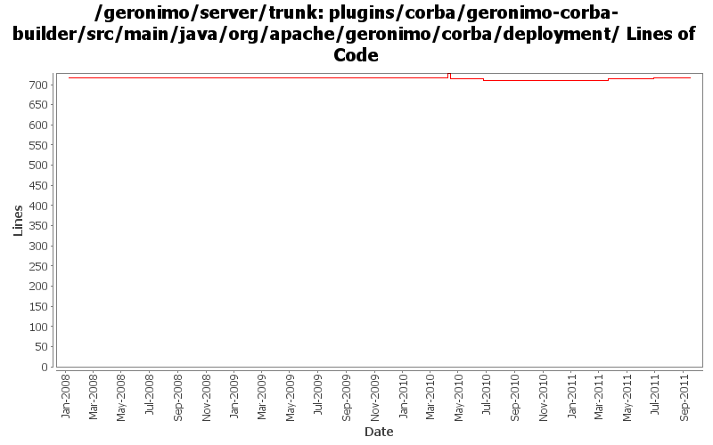

[root]/plugins/corba/geronimo-corba-builder/src/main/java/org/apache/geronimo/corba/deployment
 security
(0 files, 0 lines)
security
(0 files, 0 lines)
 config
(0 files, 0 lines)
config
(0 files, 0 lines)
 css
(1 files, 217 lines)
css
(1 files, 217 lines)
 tss
(1 files, 275 lines)
tss
(1 files, 275 lines)

| Author | Changes | Lines of Code | Lines per Change |
|---|---|---|---|
| Totals | 25 (100.0%) | 99 (100.0%) | 3.9 |
| djencks | 17 (68.0%) | 82 (82.8%) | 4.8 |
| xuhaihong | 5 (20.0%) | 9 (9.1%) | 1.8 |
| genspring | 1 (4.0%) | 5 (5.1%) | 5.0 |
| gawor | 2 (8.0%) | 3 (3.0%) | 1.5 |
Update codes due to getInjectionTargets return value type changed to Set
3 lines of code changed in 1 file:
GERONIMO-5050 really use only one owb context for the whole ear, and combine all the module info into it
1 lines of code changed in 1 file:
GERONIMO-6022 Support use the @Resource(name="java:global/env/abc") for environment entry injection
6 lines of code changed in 2 files:
GERONIMO-5867 ejb corba call does not work
1, Don't handle the nsCorbaloc in EjbRefBilder, leave it to OpenEjbCorbaRefBuilder
2, Move OpenEjbCorbaRefBuilder below EjbRefBuilder by increase OpenEjbCorbaRefBuilder's priosity number.
5 lines of code changed in 1 file:
fix build break
1 lines of code changed in 1 file:
jndi normalization fixes
2 lines of code changed in 1 file:
GERONIMO-5066 Fix a lot of problems with jndi including wrong finders and inconsistent adding of injections
5 lines of code changed in 2 files:
GERONIMO-5190 use openejb-jee jaxb tree for spec dds
31 lines of code changed in 3 files:
GERONIMO-5025, GERONIMO-5117. Make jndi supported directly by Modules and straighten out which contexts are shared when.
3 lines of code changed in 2 files:
GERONIMO-4918 port of dependency setup changes from 2.2
0 lines of code changed in 2 files:
GERONIMO-5092 corba plugins start, handle delegate gets into jndi, doesn't seem to break ejbs
5 lines of code changed in 3 files:
GERONIMO-5092 fix split packages, update things a bit for osgi
24 lines of code changed in 1 file:
GERONIMO-5150 type safe shared data in EARContext
13 lines of code changed in 1 file:
GERONIMO-5057 Use those xmlbeans generated by JAVA EE 6 schema files
0 lines of code changed in 2 files:
GERONIMO-3742 Split up namespace upgrades into the modules that need them
0 lines of code changed in 2 files: